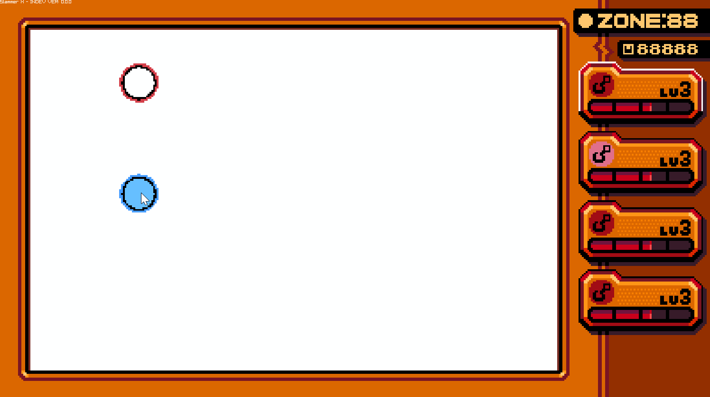

11/24/2024
Yesterday was the first day of Thanksgiving break and I wanted to start document the development of my next project. At the moment it's pretty bare bones, it's built using Raylib as a graphics library and everything else is custom code. The UI and physics are fully functional, but everything else is placeholder.

To fix this, for the next week I want to add at least 3 more new things. Big or small, mechanical or visual. The only caveat is that back-end doesn't count. This all starts today with the implimentation of the new unit, the fisherman.

The fisherman's special ability is, upon making contact with an enemy, they get tied together with a rope. When they get too far the fisherman drags the enemy along. The enemy still has collission while being dragged which can lead to a few funky interactions. Not alot technical going on there, but I'll need to do some testing to make sure the physics don't freak out. The rope uses inverse-kinematics, specifically a modifed FABRIK algorithm. It was a pretty simple solution but gives a nice result for the physics and visuals.
Depending on what I decide to add, the next 2 additions will be shown on the next devlog at the same time. But until then I'll be enjoying myself.